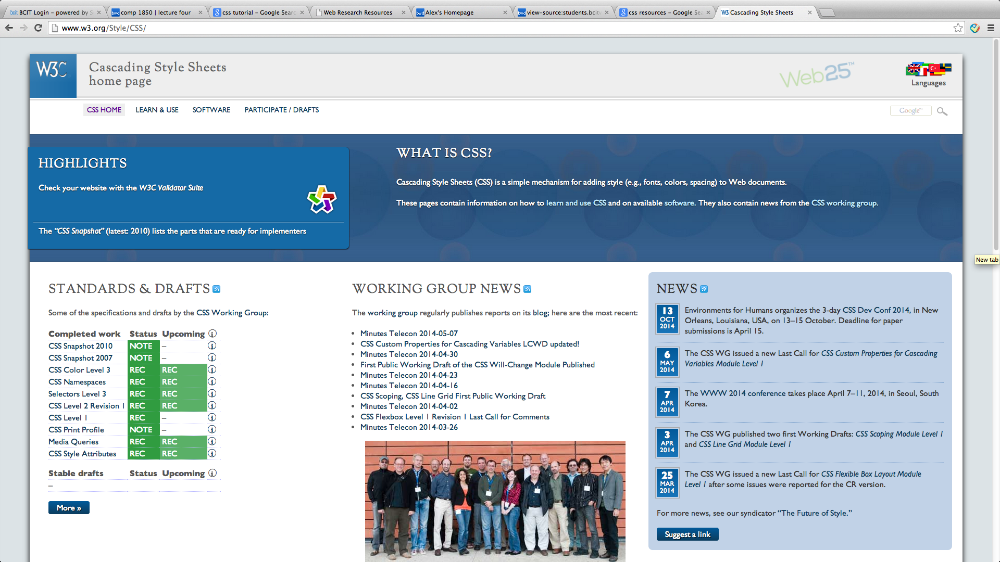
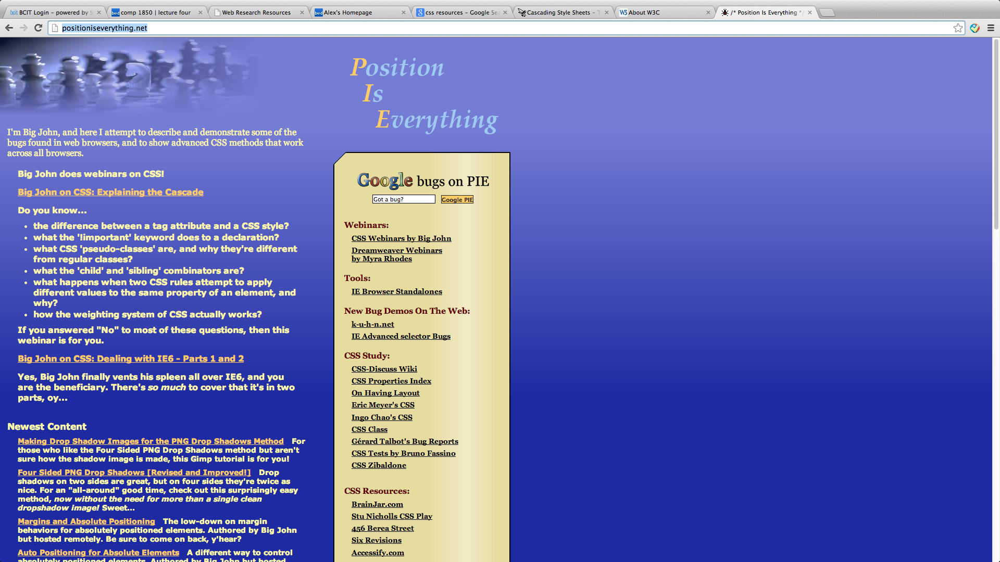
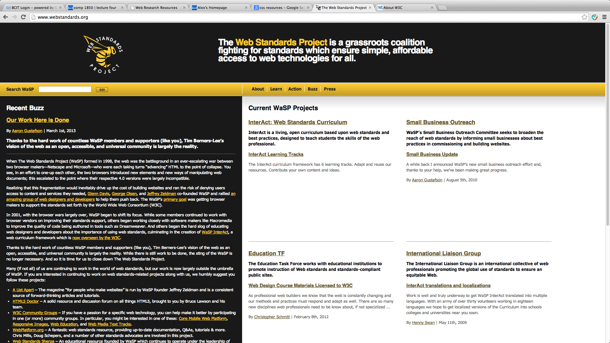
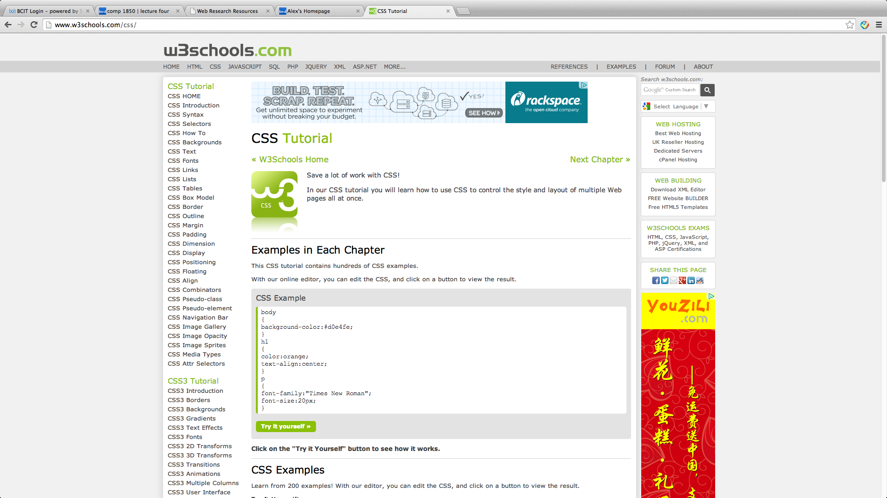
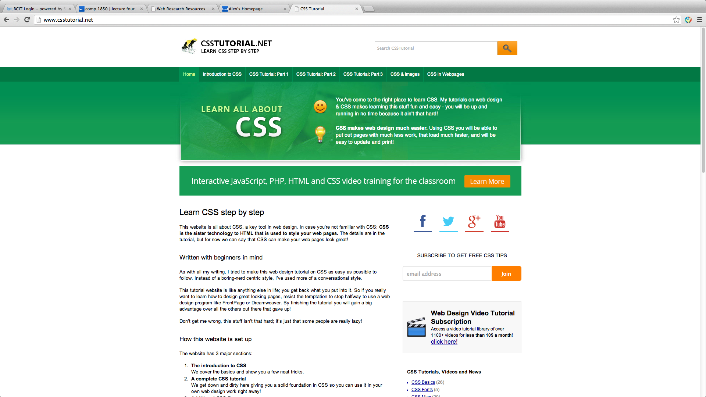

Cascading Style Sheets (CSS) is a simple mechanism for adding style (e.g., fonts, colors, spacing) to Web documents.
These pages contain information on how to learn and use CSS and on available software. They also contain news from the CSS working group
Learn More about W3C Cascading Style Sheets
Position Is Everything is a website created by Big John who attempts to describe and demonstrate some of the bugs found in web browsers, and to show advanced CSS methods that work across all browsers.
Learn More about Position Is Everything
Founded in 1998, The Web Standards Project (WaSP) fights for standards that reduce the cost and complexity of development while increasing the accessibility and long-term viability of any site published on the Web. We work with browser companies, authoring tool makers, and our peers to deliver the true power of standards to this medium.
Learn More about Web Standards Project
W3Schools is a web developer information website, with tutorials and references relating to web development topics such as HTML, CSS, JavaScript, PHP, SQL, and JQuery.
It is created and owned by Refsnes Data, a Norwegian family-owned software development and consulting company.
W3schools presents thousands of code examples. By using the online editor provided, readers can edit the examples and execute the code experimentally.
This website is all about CSS, a key tool in web design. In case you’re not familiar with CSS: CSS is the sister technology to HTML that is used to style your web pages.